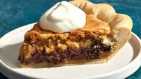

Kentucky Derby Chocolate Walnut Pie

Ingredients
- 1/2 cup all-purpose flour
- 1 cup granulated sugar
- 2 large eggs, lightly beaten
- 1/2 cup butter, melted and cooled
- 2 tablespoons Kentucky bourbon
- 1 cup chopped walnuts
- 1 1/4 cups semisweet chocolate chips
- 1 teaspoon vanilla extract
- 1 pinch salt
- 1 ready-made pie crust (for a 9-inch pie)
Instructions
- Gather the ingredients. Heat the oven to 350 F.
- Combine the flour and sugar in a mixing bowl.
- Add the eggs and melted and cooled butter, and mix to combine.
- Stir in the bourbon, walnuts, chocolate chips, vanilla, and salt.
- Pour the mixture into the unbaked pie crust.
- Bake for 40 to 45 minutes, or until the filling is set. Set the pie on a wire rack and let cool completely before slicing. Serve and enjoy.
How to Serve
Serve the pie as is if you are a purist about tradition. Or, top with a big spoonful of whipped cream or whipped cream glammed up with chocolate chips and walnuts for garnish if you like more embellishment with your dessert. You can also add a tablespoon of bourbon to your sweetened whipped cream.
Recipe Source